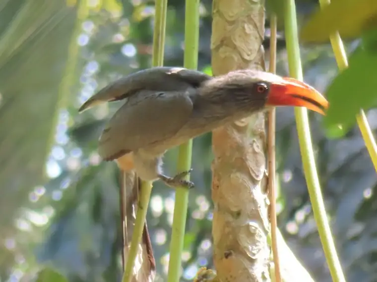
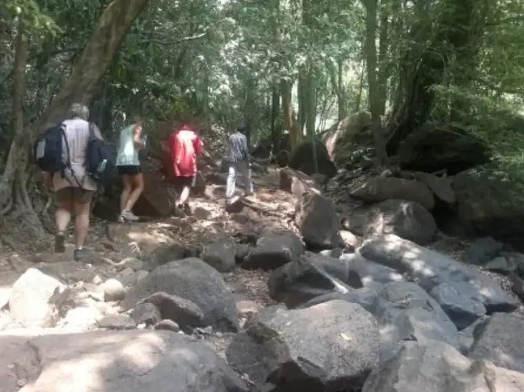

Plenty to do, and no pressure to do it
Some guests climb to waterfalls. Some never leave the veranda. Both are doing it exactly right.

Five ways to spend a morning
Neighbourhood trail
Seven unhurried kilometres through fields and villages and along the river. Wear shoes you like.
Birdwatching
More than 60 species live on the farm, with more in the sanctuary next door. Binoculars help. Patience helps more.
Natural farming
Get your hands in the soil the traditional way. It turned barren land into this garden, so it clearly works.
The spice tour
A guided walk to meet the spices from your kitchen shelf while they are still growing. A few will surprise you.
The heritage distillery
Watch cashew become feni and urak the old way: slowly, and over a wood fire.
When the veranda finally lets you go

Dudhsagar Waterfall
A bumpy jeep ride through the wildlife sanctuary, rewarded with a swim beneath the falls.
Tambdi Surla Temple and Waterfall
Goa's oldest temple, followed by a forest hike to a waterfall most visitors never find.
Saveri Waterfall and Usgalimol
A waterfall at Netravli and a riverbank of prehistoric rock carvings.
Salaulim Dam and Botanical Garden
A dam with a most unusual duck-bill spillway, and a garden to wander beside it.
Indo-Portuguese heritage homes
Step inside a grand Portuguese-era mansion at Chandor.
Honestly, whenever.
October to May
- Jeep safari to Dudhsagar Waterfall
- Swims in the local river
- Hikes through fields and villages
The monsoon
- A hike to a secret waterfall
- A natural fish spa
- The farm at its most lush
The other side of Goa, in five days
- Day 1
Arrive, exhale, meet the farm
Check in, take the guided spice tour and visit the heritage distillery.
- Day 2
Dudhsagar Waterfall
A jeep safari to the falls (October to May), then the plantation nature trail.
- Day 3
Tambdi Surla
Visit Goa's oldest temple and hike to Tambdi falls.
- Day 4
Wild water
In the monsoon: a secret waterfall, a swim and a natural fish spa. In summer: the local river and a hike through fields and villages.
- Day 5
Heritage on the way out
Breakfast and checkout, then a visit to a Portuguese-era mansion.
- Extra day
Because five is never enough
Saveri Waterfall, Netravli Wildlife Sanctuary and the rock carvings at Rivona.
Room rates include breakfast and a plantation tour. Extra costs are mainly transport, entry fees and guiding. We are happy to tailor the plan to you. Activities depend on government restrictions at the time of travel.